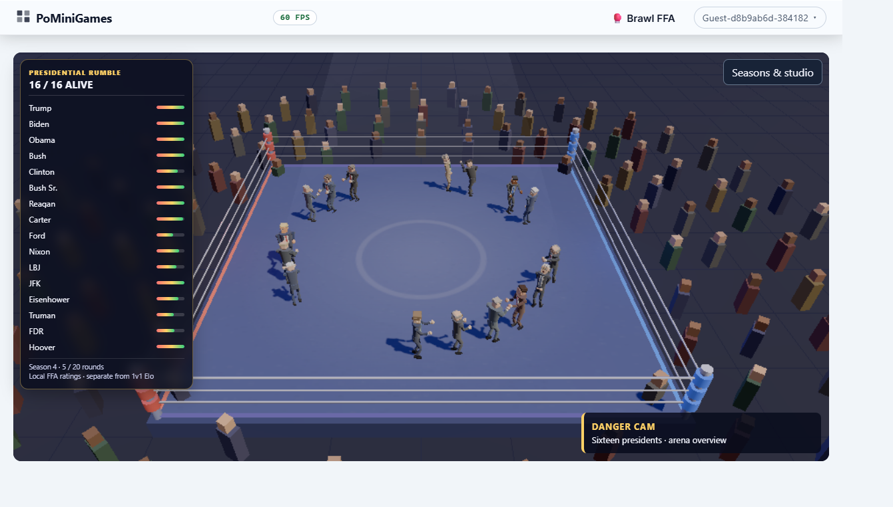
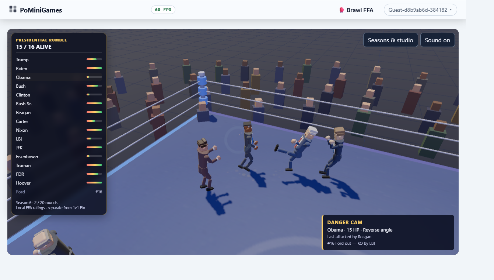
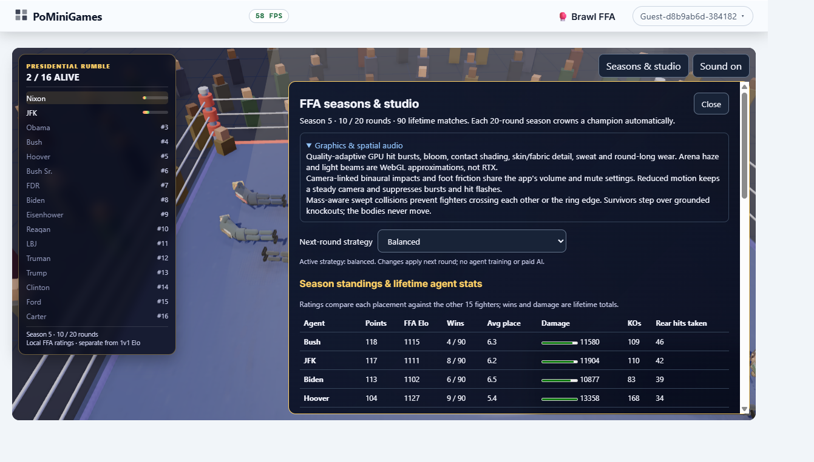

Before

Existing studio lighting and camera, without the new impact, material and collision systems.
After

Quality-adaptive WebGL particles, post-processing, material detail, wear and light shafts. Web Audio HRTF follows the camera.
Studio polish

Slide-out glass studio, featured-fighter highlights, press feedback and synthesized cues; mute and reduced-motion support.
Physics and performance
Swept contacts, mass-aware knockback and friction keep standing fighters apart and inside the ring. Survivors step over immovable knockouts.
Bounded particles and audio voices protect 16-fighter performance. Skin scattering, volumetric lighting and screen-space contact shading are approximations, not RTX or multi-bounce ray tracing.